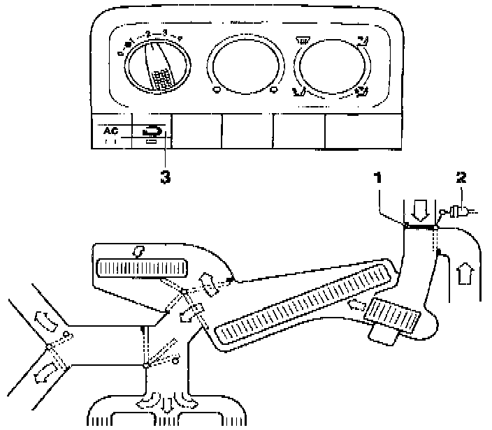

Fresh Air Cannot Be Shut Off
Test Condition:
- Engine running, vacuum is present.
- Fresh air/recirculating flap switch -3- switched OFF
Test Procedure:
Turn fresh air blower switch -E9- to position "2".
Components/Specified Functions:

Check components and specified functions using above table: